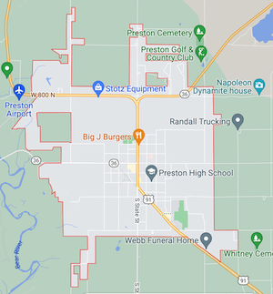

Preston, Idaho
Weather Summary:
Precipitation: 10% Humidity: 93% Wind: 8 mph5 Day Forecast
Wed

89°F | 32°C
Wed
89°F
Wed
89°F
Wed
89°F
Wed
89°F
Community Calendar
Tuesdays
Story Time: 11 a.m., Franklin City Building
Wednesdays
Knit Wits: 11 a.m., Presbyterian Church, 206 East 200 North, Preston
Special Friends Club, 12:45 p.m., for all adults who have special needs, directed by library staff member Diane Steadman.
Every week has a different theme with books and STEM activities along with sensory and learning materials.
MGM Club: 4 p.m., Larsen-Sant Library
Thursdays
Story Time, 11 a.m., and 2 p.m., Larsen-Sant Library
Adult Institute last class, 7 p.m., 2 Samuel 1-12/2 Samuel 13-24
BFF Club Meeting: 4 p.m., Larsen-Sant Library



Contact Info
Email: UpperTheWeather@gmail.com
Phone Number: (123)456-7890